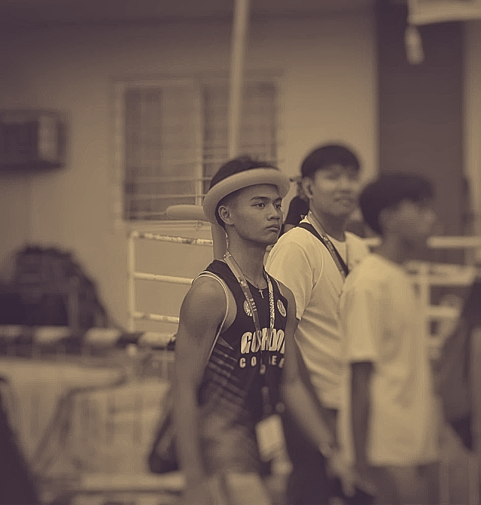
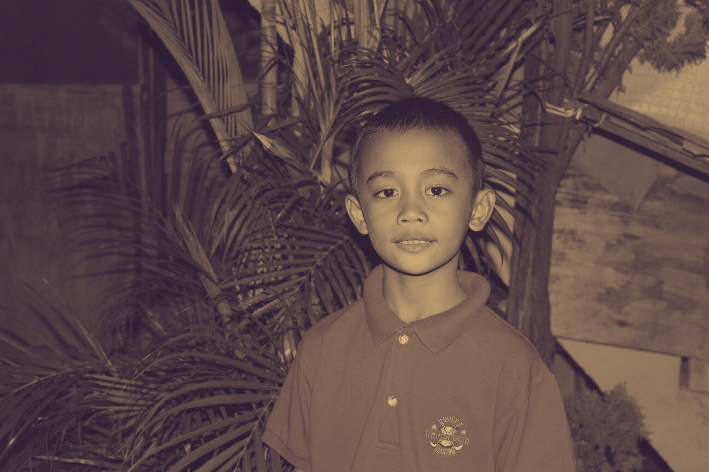
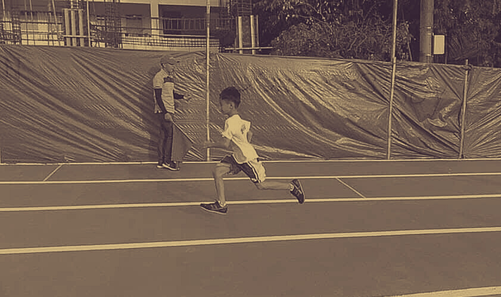
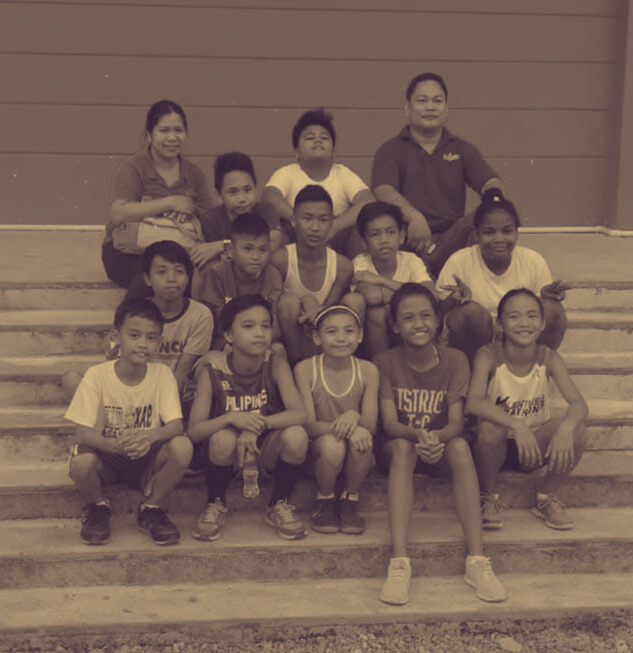
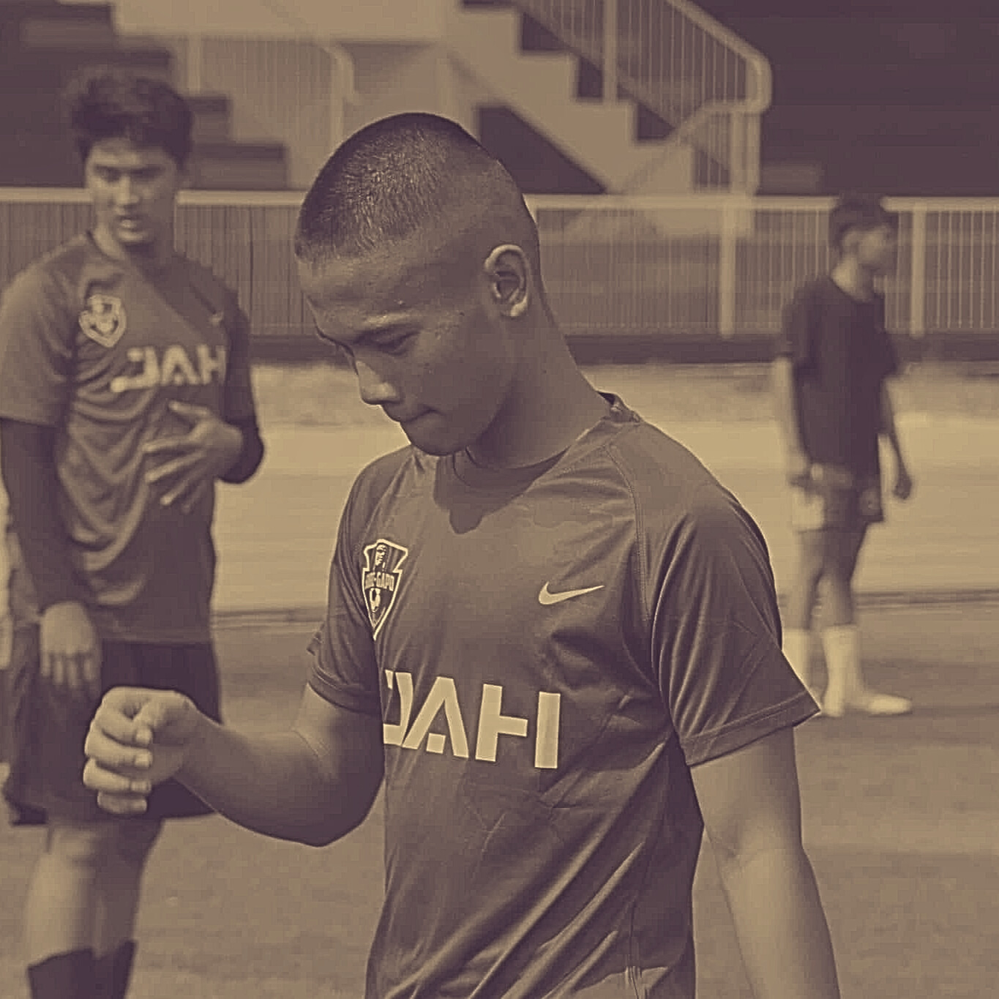
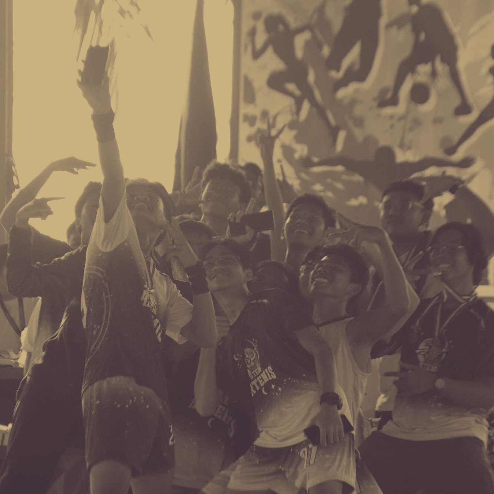
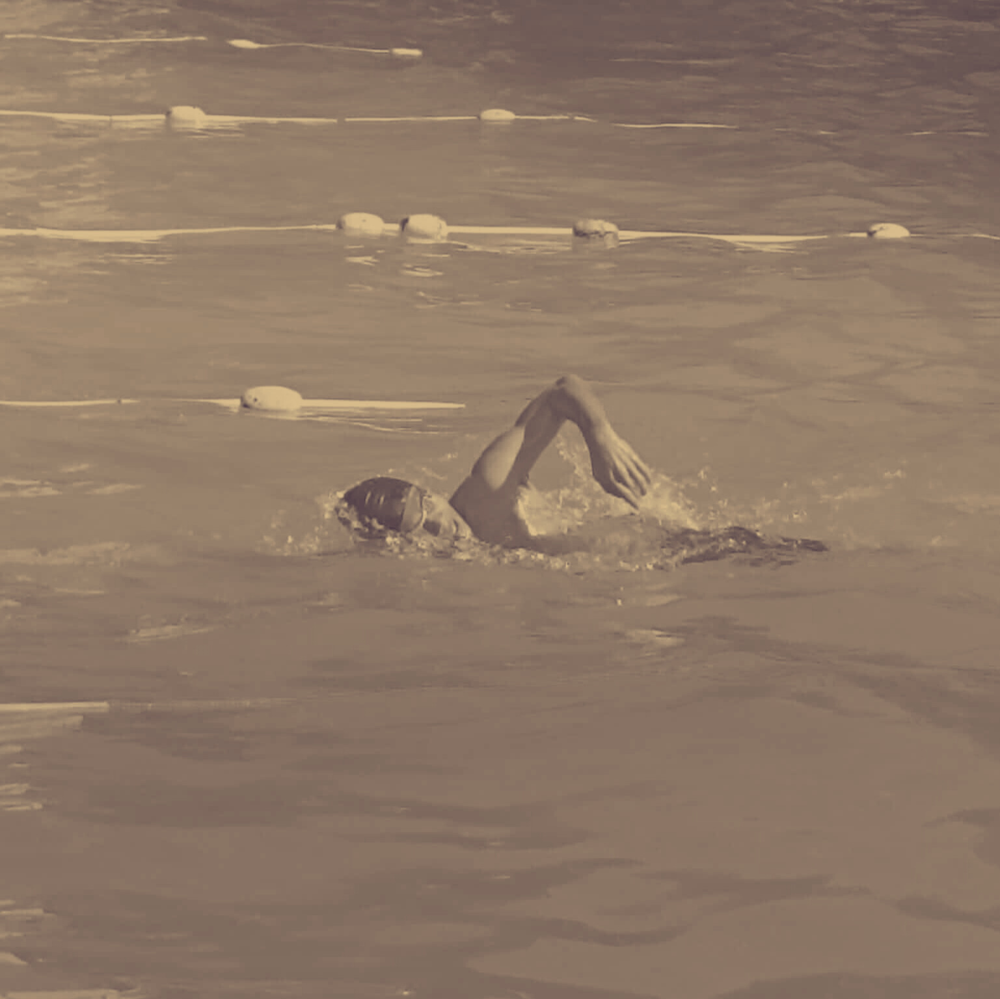
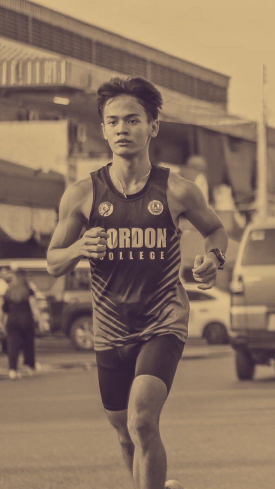

THE REARBACK
March 13, 2007 Rising Web Developer Olongapo City
HERWIN FERNANDEZ
He Ran to Heal — and Found Himself on the Road
Born and raised in Olongapo City, Lhord Jian Herwin O. Fernandez has always had big dreams. Now a first-year student-athlete at Gordon College, Lhord is determined to make a name for himself in both the classroom and on the track. Living with his parents, he navigates the challenges of academic life while pursuing his lifelong passion for sports. Choosing to study Bachelor of Science in Information Technology (BSIT) was a practical decision. “Technology is growing fast, and I know there are many opportunities waiting,” Lhord explains. But sports have always been where his heart truly lies. From a young age, he dreamed of representing the Philippines and competing at the highest levels—ambitions fueled by years of dedication and countless hours of training. What sets Lhord apart, however, is his belief that his dual passions don’t have to compete—they can coexist. With careful discipline, time management, and sheer determination, he aims to excel both academically and athletically. “It’s not easy, but I know it’s possible. I don’t have to give up one dream for the other,” he says confidently. Lhord’s story is one of perseverance, ambition, and balance—a reminder that the next generation of student-athletes can pursue excellence in multiple arenas. Whether he’s coding in the computer lab or sprinting across the track, one thing is certain: his name is one to watch. Someday soon, the world will recognize Lhord Jian Herwin O. Fernandez at the pinnacle of his pursuits.
WHERE DID HE COME FROM?

Growing up in the vibrant streets of Olongapo City, Lhord Jian Herwin O. Fernandez spent his childhood surrounded by family, friendship, and the simple joys of youth. He attended Olongapo City Elementary School, where his journey as both a student and an athlete began to take shape. Known for his boundless energy and determination, Lhord was the kind of student who balanced academics with active play, often joining school events, sports activities, and even helping organize them. Teachers described him as a hardworking learner—curious in class, respectful toward his peers, and fiercely competitive on the field. His days were filled with running through the school corridors, playing games during recess, and staying late after class to practice with his friends under the fading afternoon sun. It was during these years that he learned the importance of teamwork, discipline, and perseverance—values that would guide him through every challenge he’d face in life. For Lhord, the spark that ignited his passion for sports began with a single race. During his elementary years at Olongapo City Elementary School, what started as a simple school activity would soon grow into something much greater. It was during a small intramural event when he first stepped onto the track—wearing his running shoes, heart pounding, and mind focused. The whistle blew, and in that instant, his world seemed to shift. Every stride felt natural, as if he had finally discovered something meant for him. The wind brushed against his face, his classmates cheered from the sidelines, and he ran—not for medals or recognition—but for the pure joy of it. When he crossed the finish line, breathless yet fulfilled, something inside him changed. That day, he realized he had found his calling. From that moment forward, athletics became more than just a school activity; it became his passion, his escape, and his purpose. He began to train harder, pushing himself a little more each day. Whether it was under the scorching sun or during quiet afternoons, Lhord kept running—driven by the feeling that he was meant to do this. The track became his second home, a place where he could test his limits and prove to himself that with dedication and heart, he could go far. What started as a simple race had unknowingly become the first step toward a lifelong journey—one that would shape his future as both an athlete and a person
That day was monumental for Lhord. As he stood on the starting line, the afternoon sun casting long shadows across the track, he had no idea how significant that moment would become. He wasn’t just running another race—he was running in front of Gordon College, the very institution he would attend six years later. Fate, it seemed, had already begun to draw the path he would one day walk. The crowd cheered as he sprinted across the track, the sound of his footsteps blending with the excitement of youth and competition. Every stride carried not just energy, but purpose.
When he crossed that finish line, breathless and proud, he felt something deeper than victory. It was as if time had slowed down to whisper a message—that this was where he belonged. But that day was memorable for another reason too. Somewhere in that crowd, amidst the laughter and applause, Lhord felt something entirely new—the stirrings of young love. It wasn’t planned, nor did he fully understand it, but it made the moment unforgettable. In one afternoon, he discovered two things that would shape him in ways he never imagined: his passion for athletics, and the feeling of falling in love for the first time. Both lit a fire in him—a fire that still burns today, driving him to chase his dreams with the same heart that once raced across that track.
"JACK OF ALL TRADES"

Before the whistle blows and the crowd begins to cheer, he already knows what it means to give everything for the game. His journey in football spanned five years, each season shaping him into the athlete and person he is today. What began as simple curiosity soon became a deep passion for the sport’s rhythm—the teamwork, the strategy, and the thrill of every goal. From early practices under the heat of the sun to late matches that tested his endurance, Lhord learned that football is more than just a game of skill; it’s a test of heart, discipline, and unity. As he trained and competed, he developed not only his technical abilities but also his leadership on and off the field. He learned to read the game, anticipate plays, and trust his teammates completely—because football, at its core, is about trust. Through victories and defeats, Lhord stayed grounded, always striving to improve. Those five years taught him that progress isn’t measured only by the score, but by the grit and growth that come with every challenge. Football became his training ground not just for athletics, but for life itself—a reminder that success is earned through perseverance, teamwork, and an unbreakable will to keep playing, no matter how tough the match gets.
After years of running tracks and chasing goals on the field, he found a new passion that demanded a different kind of strength—volleyball. What began as curiosity soon grew into commitment when he joined the team and took on one of the most demanding roles on the court: libero. For two years, Lhord served as the starting libero for the STEM strand, and for one of those years, he also represented his school with pride. In a position built on defense, quick reflexes, and unshakable focus, Lhord learned to read the game with precision and move with purpose. Every dive, every save, and every rally became a test of endurance and trust—not just in his teammates, but in himself. His consistency and leadership from the back row made him an anchor of stability during tense matches, earning the respect of both teammates and opponents. Those two years in volleyball didn’t just add another sport to his name; they sharpened his discipline, teamwork, and mental toughness. As the libero, he wasn’t always the one scoring the points—but he was the one keeping the game alive, proving that true strength isn’t always about standing in the spotlight, but about holding the team together when it matters most.
After years of running on tracks, diving for saves, and sprinting across football fields, he found himself drawn to a new challenge—swimming. Unlike the noise of the crowd or the rush of open fields, the water offered a different kind of rhythm, one that demanded patience, precision, and quiet strength. What began as an exploration soon became a personal mission to master another arena of athleticism. Each stroke, each lap, and each breath became a test of endurance and focus. In swimming, Lhord discovered that victory doesn’t always come from speed alone, but from control—the balance between power and calm. As his journey continues, he pushes himself to improve technique, build stamina, and learn from every dive. Though still ongoing, this new chapter represents not just another sport, but another way for Lhord to challenge his limits and grow as an athlete. The pool has become both his training ground and his place of reflection—a space where he learns to move forward, one stroke at a time, chasing progress with the same determination that’s carried him through every field, court, and track he’s ever set foot on.
REDISCOVERING THE SPORT THAT STARTED IT ALL
After years of chasing the ball, diving for saves, and cutting through the water, Lhord Jian Herwin O. Fernandez finds himself back where everything started—on the track. The familiar scent of rubber, the echo of footsteps, and the rush of adrenaline as he pushes off the line—it all feels like home. This is where his passion for sports was first born, but now, the fire burns with a new purpose. This time, Lhord runs not just to compete, but to conquer a far greater dream: to become a world-class triathlete. Returning to athletics wasn’t a coincidence—it was destiny pulling him back. Over the years, he’s grown stronger, smarter, and more disciplined. The lessons he learned from his other sports have molded him into a more complete athlete. Football taught him resilience and teamwork—the will to keep moving even when the odds are against him. Volleyball sharpened his reflexes and taught him focus under pressure, where one small mistake could change the game. Swimming trained his endurance and mental calm, teaching him to control his breathing and move with rhythm and grace. Each of these experiences has become a piece of the puzzle, now fitting perfectly into the world of triathlon—a sport that demands mastery of all three disciplines. But for Lhord, this journey isn’t just about medals or recognition. It’s about growth, redemption, and proving something to himself. Every early morning run, every swim under the rising sun, every push of the pedal is a step toward becoming the athlete he’s always dreamed of being. There’s no shortcut to greatness—just consistency, pain, and persistence. And yet, that’s what drives him most. Because when he runs now, he’s not just that boy from Olongapo City Elementary anymore—he’s the young man who dared to believe that he could do it all, and is willing to fight for it. As Lhord continues his training, he carries with him the same heart that once made him fall in love with sports. The difference now is direction. He knows where he’s headed, and he knows what it takes to get there. For him, this return to athletics isn’t just the continuation of a story—it’s the evolution of it. It’s proof that passion never fades; it just grows stronger with every fall, every comeback, and every finish line crossed. Someday soon, the world will see the name Lhord Jian Herwin O. Fernandez, not just as a student-athlete from Gordon College, but as a symbol of what happens when heart, discipline, and dream move as one.
From the busy streets of Olongapo City to the athletic fields of Gordon College, Lhord Jian Herwin O. Fernandez has lived a story built on passion, perseverance, and purpose. What began as a simple childhood spark has now grown into a burning drive to reach new heights—not just as an athlete, but as a young man chasing the best version of himself. Through the years, Lhord’s journey has never been about sticking to just one path. He’s sprinted through tracks, defended courts, scored goals, and swam countless laps—all in pursuit of progress, all in search of belonging. In every sport he tried, he left a piece of himself behind: the discipline from football, the precision from volleyball, the calm from swimming. Each one shaped him, preparing him for something greater than he ever imagined. Now, as he returns to the sport that started it all, Lhord steps onto the track not just as an athlete—but as a symbol of growth. His dream of becoming a world-class triathlete is no small feat, but dreams rarely are. What sets him apart is the mindset that has carried him through every chapter: the belief that no matter how far you go or how many times you fall, passion will always lead you back home. Beyond medals, trophies, and applause, Lhord’s story is one of self-discovery. It’s about learning that success isn’t measured only by victories, but by the courage to keep moving forward when things get hard. It’s about proving that you can balance ambition with heart, academics with athletics, and discipline with dreams. As he continues to train, study, and evolve, one thing is certain—this is only the beginning. The boy who once ran his first race in Olongapo has grown into a man ready to represent his name, his school, and someday, his country. And when that day comes, when the world finally sees the name Lhord Jian Herwin O. Fernandez standing tall among champions, it won’t just be another victory. It will be the realization of everything he’s ever worked for—proof that dreams chased with heart and hard work will always find their way to the top.
